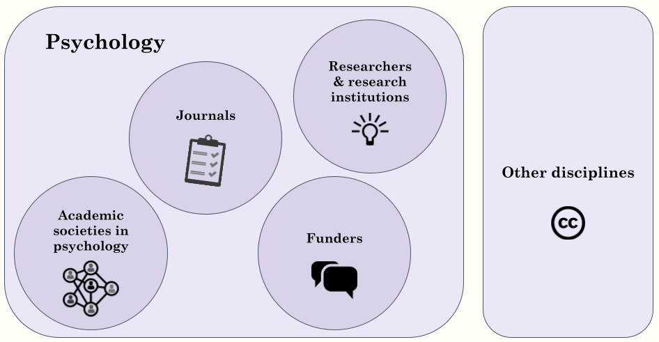
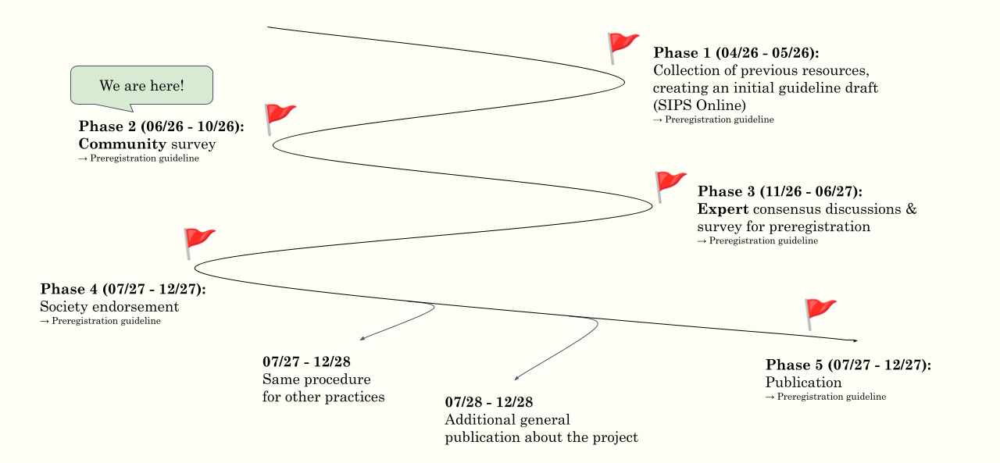

Dr. Lisa Spitzer
Leibniz Institute for Psychology (ZPID)
Member of the SIPS Executive Committee
A FORRT-supported community project
In 2015, the Center of Open Science (COS) introduced the Transparency And Openness Promotion Guidelines (TOP; Nosek et al., 2015), a policy framework for journals to implement eight publication standards aligned with open science. The TOP Guidelines have been widely adopted across disciplines, with more than 5,000 journals and organizations providing signatories to express their support and commitment. Building on this extensive implementation experience, an updated version of the TOP Guidelines was introduced in 2025 to clarify definitions and enhance its applicability across different research designs and disciplines (Grant et al., 2026; see this webinar for an introduction to TOP 2025).
The update, however, introduces a key change at the most stringent standard of the guidelines (previously Level 3, now called “Certified”). In the previous version, this standard required a concrete, measurable action. For example, the old data transparency standard stated: “Data must be posted to a trusted repository, and reported analyses will be reproduced independently before publication.” This provided a clear, verifiable requirement. In the updated guidelines, this standard is more abstract, relying on adherence to “best practices”. For example, the most stringent level for the data transparency research practice now states: “A party independent from the researchers certified that data were deposited with metadata per best practice for the type of data” (see https://www.cos.io/initiatives/top-guidelines). This is a difficult standard to establish and implement, because it is not clearly defined or universally established across – or even within – disciplines such as psychology. As a result, it is difficult to assign or verify the most stringent standard of the TOP Guidelines unambiguously.
Therefore, what is missing are best-practice guidelines for each discipline that intends to implement the TOP Guidelines, enabling their meaningful application. These must, of course, take into account the actual circumstances in the research community, on the one hand, and, at the same time, be supported by relevant stakeholders such as journals, funders, and infrastructure institutes, on the other.
Therefore, our goal is to develop consensus-based best-practice guidelines for psychology. These will provide a consistent approach to the “Certification” Level of the TOP Guidelines for psychological research. Furthermore, they can also serve as broader standards that may be applicable to a wide range of open research practices, including other frameworks and guidelines.
“Consensus-based” means that we will gather input from the community, experts, and stakeholders to ensure that we reach a shared agreement on what “best practice” means for each open science practice in psychology (see action plan & timeline). Our approach to developing them will be guided by the strategy used to create the PRP-QUANT Template (Bosnjak et al., 2022), a consensus preregistration template for quantitative research in psychology.
Our goals for the planned best-practice guidelines are:
Our goal is to provide three deliverables:
Specifically, we hope that the guidelines will be useful for the following groups:


Click any phase to expand its description.
We will test the planned consensus procedure using the practice of preregistration as an example. This means that we will first develop the preregistration guidelines, which will then inform the development of guidelines for the other practices.
Together with the community, we will prepare and consolidate existing materials to serve as the starting point for the preregistration guideline. To this end, we will organize a hackathon at SIPS Online to collaboratively compile existing resources, templates, recommendations, and guides on preregistration, and to write an initial draft of the guideline. A key point for this draft will be the alignment between the preregistration practice in psychology and how this practice is incorporated in the TOP Guidelines, since it is divided into three distinct practices there: Registration, Protocol, and Analysis Plan (see https://www.cos.io/initiatives/top-guidelines).
Subsequently, we will conduct a survey in which we present our guidelines draft to the broader psychology community and solicit feedback and comments on how to improve it. Additionally, we will consider the specific needs of different psychological subdisciplines, data types, and study designs, thereby informing the guideline’s modular structure. Based on the survey results, we will revise the preregistration guidelines draft and prepare it for the consensus discussions.
Next, we will get to the most exciting part of the project – the consensus discussions! To enable a well-founded and representative consensus, we aim to bring together a diverse group of experts from each practice, i.e., in this phase, preregistration. Specifically, we plan to invite meta-researchers who have published on preregistration; authors of preregistration templates, recommendations, and guides; infrastructure staff involved in preregistration tools; publishers; funders; and members of psychological societies. Because we aim for a modular approach, we also want to lay focus on inviting experts from various sub-disciplines or focusing on specific data types. During the meeting, we will try to answer the following questions:
To reach consensus, we will adopt the strategy used by Aczel et al. (2020) to develop a consensus-based transparency checklist, namely an adapted reactive Delphi process. Specifically, we will revise the guidelines draft based on the consensus discussion. Then, we will send the updated version to our invited experts to assess whether it can reach consensus, or adapt it further. Once consensus is reached, we will finalize the preregistration guidelines and document the process, obstacles, and remarks for the other practices’ consensus discussions.
After creating the preregistration guidelines, we will contact additional psychological societies and other stakeholders (e.g., journals, funders) to request endorsement of our guidelines.
The preregistration guidelines will be published under an open license (CC-BY), enabling them to evolve alongside the changing circumstances in the psychological research landscape and so that they can be used as the basis for best-practice guidelines in other disciplines. To further increase transparency and reusability, we will publish comprehensive documentation alongside them. Moreover, we will write an accompanying publication presenting the preregistration guidelines and describing our community-based approach in more detail.
Once we have piloted our approach with the practice of preregistration, we will organize consensus discussions for other open science practices. We will mainly focus on practices relevant for the verification of research, as covered by the TOP Guidelines:
In addition, we might add other relevant topics, e.g., Registered Reports.
Lastly, once we have reached a consensus and created our best-practice guidelines for each practice, we will also provide a general publication that describes the whole project and gives context to the individual guidelines.
The guidelines will be a community project, developed by and for the community! This means that we need your help! ✨
You can indicate your interest in being part of single or multiple phases of the project by filling out this form or by contacting the lead, Lisa Spitzer (ls@leibniz-psychology.org). If you have any questions or comments, please feel free to reach out anytime!
Your help is greatly appreciated! Members of the preregistration task force will be included in the author list in section A4 (“sub task force members & core task force members who participated in these guidelines”).
Join our hackathon at SIPS Online on May 6, 2026! Anyone who helps will be included in the author list in section A5 (“community contributors”). Register here for SIPS Online!
If you have in-depth knowledge of preregistration (e.g., have published work on the topic), consider participating! Invited speakers will be included in author lists A2 (“invited open science experts”) and A3 (“other invited stakeholders”).
If you are a committee member of any psychological society, consider joining our consensus discussions or endorsing our guidelines! Relevant stakeholders will be listed in section A3 (“other invited stakeholders”).
Interested in organizing and moderating the consensus procedure for another practice, conducting the community survey, and drafting the guidelines? Reach out! You will be able to draw on the knowledge collected during previous phases and receive help and supervision from the project lead and core task force. Anyone who takes on this task will be the first author of the guidelines for the respective practice (section A1, “sub-task force lead(s)”). We encourage early-career researchers with a certain standing in their research field, as well as dual leaders, to apply.
Leibniz Institute for Psychology (ZPID)
Member of the SIPS Executive Committee
Leibniz Institute for Psychology (ZPID)
Member of the Open Science Commission of the German Psychological Society
Member of KonsortSWD
Utrecht University
Director of the Framework for Open and Reproducible Research Training (FORRT)
University of Chester
Member and Past Chair of the TOP Advisory Board
Duke University
President of the Society for the Improvement of Psychological Science (SIPS)
University of Coimbra
Associate Director of the Journal Editors Discussion Interface
Former President of the Society for the Improvement of Psychological Science (SIPS)
Ludwig-Maximilians-University of Munich
Member of the Open Science Commission of the German Psychological Society
Member of the Steering Group of the German Reproducibility Network